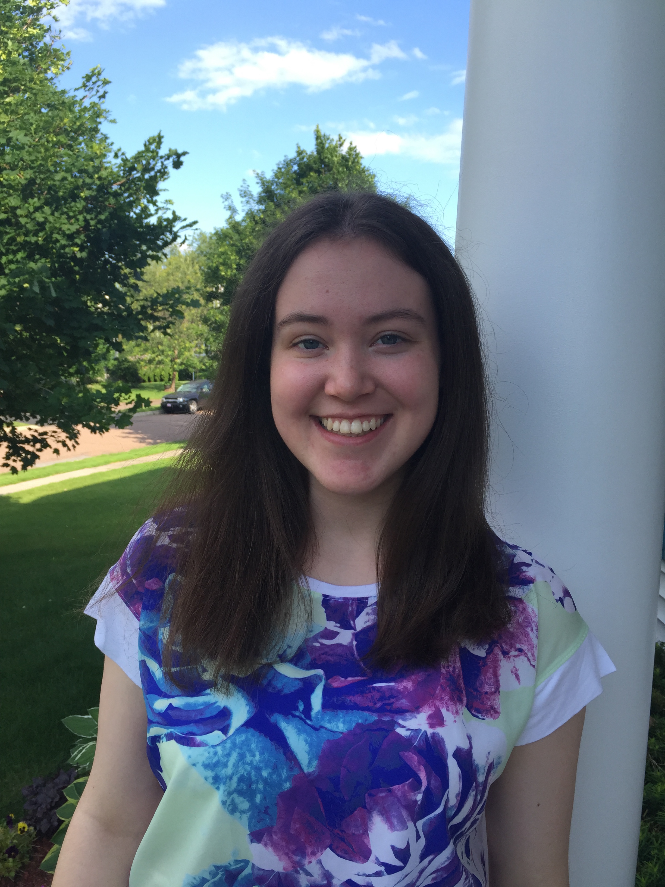

Summary
Welcome to my webpage!
My name is Marissa Le Coz, and I am a junior at Dartmouth College majoring in Computer Science. After graduating from Dartmouth in 2017, I aspire to enter an M.S. program in Computer Science with the ultimate goal of working in industry. I am currently seeking internships in software engineering/development for Summer 2016.
Upon entering college, I was sure I was going to major in Mathematics. After taking a couple of math classes and coming to the shocking realization that the major was not quite what I was looking for, I enrolled in a Computer Science class. I quickly discovered that Computer Science had all the things I loved about math (the logic; the quantitative, procedural thinking; the abstraction), while at the same time lacked the things I did not like about math (the absence of both creative opportunities and project-based work).
The fact of the matter is that, while I have always had a passion for quantitative work, I have also always had a creative side and a desire to make things. Computer Science allows for the perfect combination of quantitative reasoning and creative inspiration.
But all of that is only the tip of the iceberg. Most importantly, software impacts everyone's lives, and there are so many opportunities to change the world for the better through computing. I am looking forward to dedicating my professional life to projects that do just this: change the world for the better.
Education
Dartmouth College | Hanover, N.H.
2013-2017 (expected) | Computer Science
Selection of Courses: Intro to Programming and Computation, Object-Oriented Programming, Discrete Math in Computer Science, Software Design and Implementation, Algorithms, Honors Linear Algebra, Multivariable Calculus.
Experience
Software Developer Intern | January 2016 - March 2016 (expected)
Notabli / Parent Co. | Burlington, VT
Notabli / Parent Co. is an awesome start-up that has the mission of making social media safer for families. I will be working on web development projects.
Software Developer and Project Manager | June 2015 - November 2015
Neukom Digital Arts Leadership and Innovation (DALI) Lab | Dartmouth College
The DALI Lab, affiliated with the Dartmouth College Computer Science Department, partners with clients from the Dartmouth community and beyond to turn ideas into digital realities and visualize data in meaningful ways. The project I was on was called Darby Doomsday (finished website, Github)
- Created an interactive website with a small team of developers and designers to accompany retired Dartmouth English Professor Ernie Hebert's books series The Darby Chronicles.
- Learned HTML, CSS, and JavaScript skills on the job.
- Served as Project Manager from September to November 2015.
- Worked in close collaboration with the client, adjusting the site based on his feedback and explaining technical concepts in an understandable way.
C.S. 1 Recitation Section Leader | September 2014 - November 2014
Computer Science Department | Dartmouth College
- Graded assignments and exams.
- Staffed lab office hours.
- Led weekly recitation sections for a group of 9 students - reviewed class material and helped students with programming drills.
Skills
Languages: Java (advanced), C (advanced), Python (intermediate), bash shell-scripting (intermediate), HTML (intermediate), CSS (intermediate), JavaScript (prior experience)
Operating Systems: UNIX
Other Technologies: Eclipse, Sublime, GitHub version-control
Projects
NovenaNetwork | in progress
In my spare time, I have been working on a Catholic social media iOS app! I don't want to release too many details until it's finished! The design phase is complete, and I have begun coding it. I have been learning Swift and xCode for this project, Parse/Heroku to come. This has also been my first experience in UI/UX (design), which is also super fun.
Darby Doomsday | 2015
finished website, Github
Worked as a developer and project manager for this project in the DALI Lab (see Experience section). Key features of the site include an interactive map, a books section, and dynamic content. HTML, CSS, JavaScript.
Tiny Search Engine | 2015
Coded a crawler, indexer, and query engine for a class project. C.
Dog | 2015
Coded a command that works like the UNIX “cat” command but with additional functionality, including encryption/decryption and line-numbering options. C.
Hobbies
- Dance. I took dance classes from age 6 to age 18. While I did jazz, modern, lyrical, and ballet, my professed favorite has always been tap, which I have taken a few master classes in. I especially enjoy doing tap improv; there's something very freeing about improv. As expressed in C pseudocode:
char *marissas_brain = (char *) malloc(size(marissas_brain_capacity));
while (there is brain capacity left) {
// work and learn
}
free(marissas_brain); // tap dances - Singing the praises of Computer Science. Any of my friends would attest to the fact that I'm somewhat of a Computer Science zealot. I pressure encourage my friends (and random people I meet) to try out Computer Science because of how amazing it is. I also recently (December 2015) gave a presentation to a group of STEM students from my high school on the subject of why they should consider majoring in Computer Science.
- Philosophy. When I need to relieve the quantitative part of my brain, I turn to Philosophy. Check out my article entitled "Freedom Redefined: A Christian Perspective on the Meaning of Freedom," published (on pages 25-28) in the Fall 2014 issue of The Dartmouth Apologia, Dartmouth's journal of Christian thought.
Contact Me
If it sounds like I might be a good fit for your company or a good collaborator for a project, please feel free to contact me at Marissa.C.Le.Coz.17@dartmouth.edu.